zodiac signs
Zodiac sign to shed light on your personality, love life, career, and more. Insight into your strengths, weaknesses, and life path are all accessible once you unpack your zodiac sign’s lessons during this life.



